Mission Memories
 PCEM January 2025 Batch-Out!
PCEM January 2025 Batch-Out!
01/14/2025
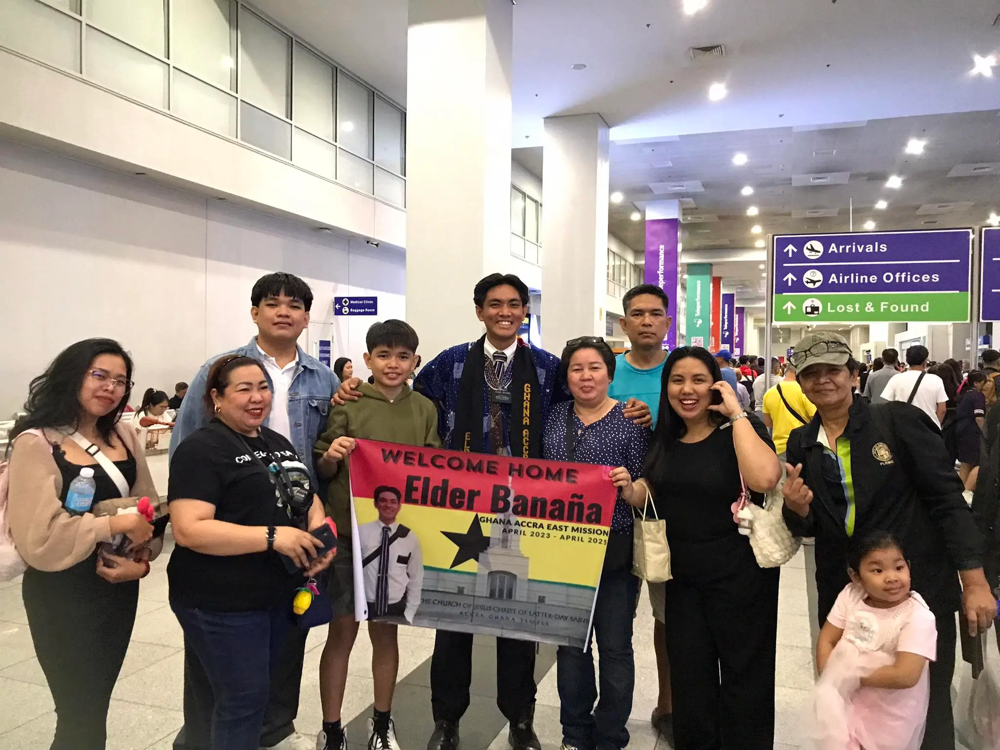
Home! Happy to be back
01/15/2025
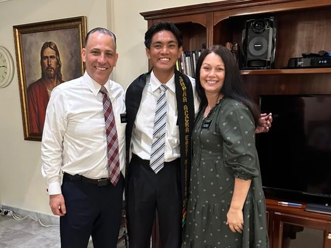
With Mission Parents,
President and Sister Casinillo!
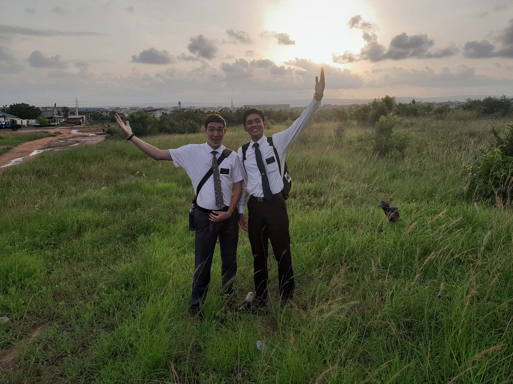
With my trainer, Elder Elwood!
Area: Ashalley Botwe Ward
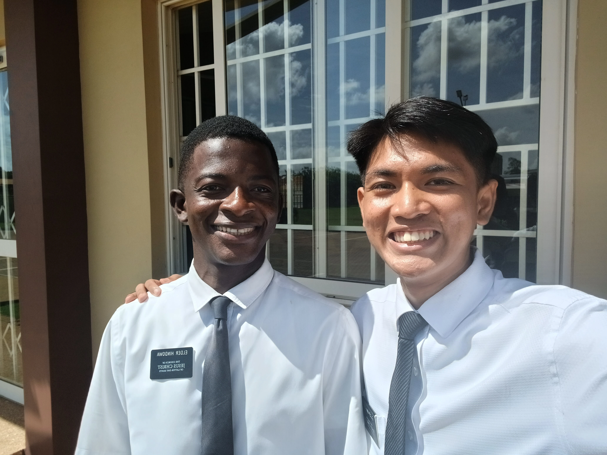
2nd Companion, Elder Hindowa!
Area: Ashalley Botwe Ward
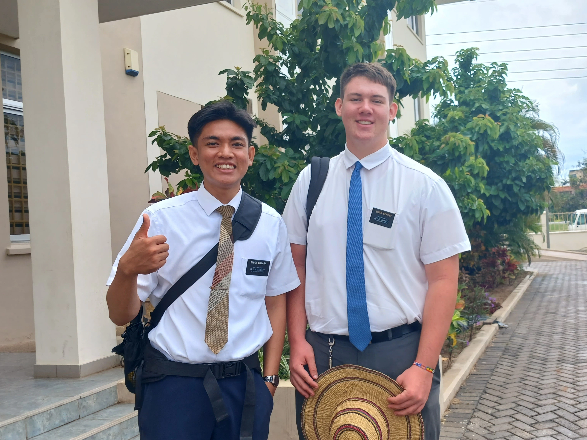
3rd Companion, Elder Bentley!
Area: Batsonaa 1 Ward
 4th Companion, Elder Habel!
4th Companion, Elder Habel!
Area: Batsonaa 1 Ward
 5th Companion, Elder Filimoehala!
5th Companion, Elder Filimoehala!
Area: Suhum Ward
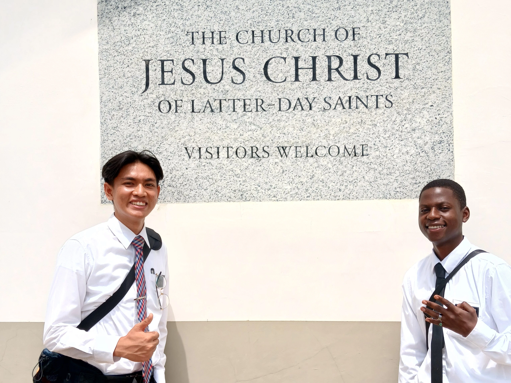
6th Companion/1st Trainee, Elder Chisango!
Area: Suhum Ward
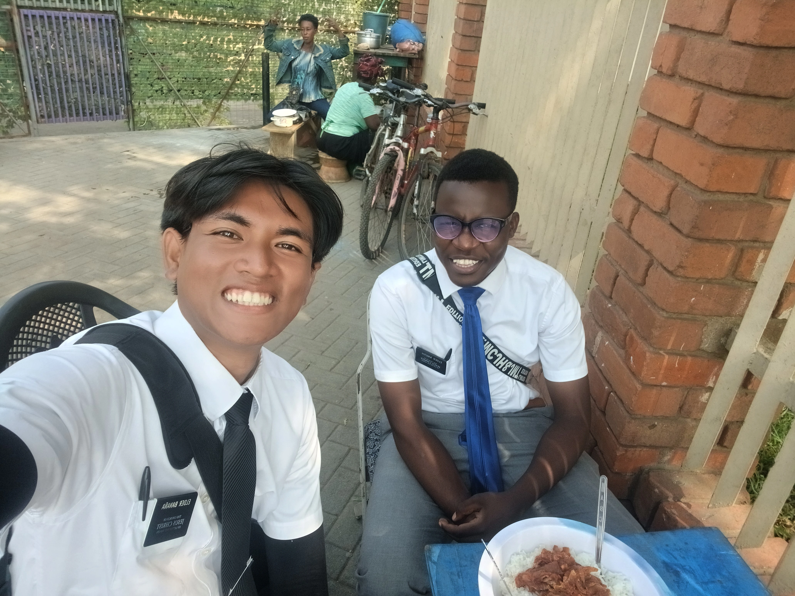
7th Companion/2nd Trainee, Elder Kivuthi!
Area: Nungua 2 Ward
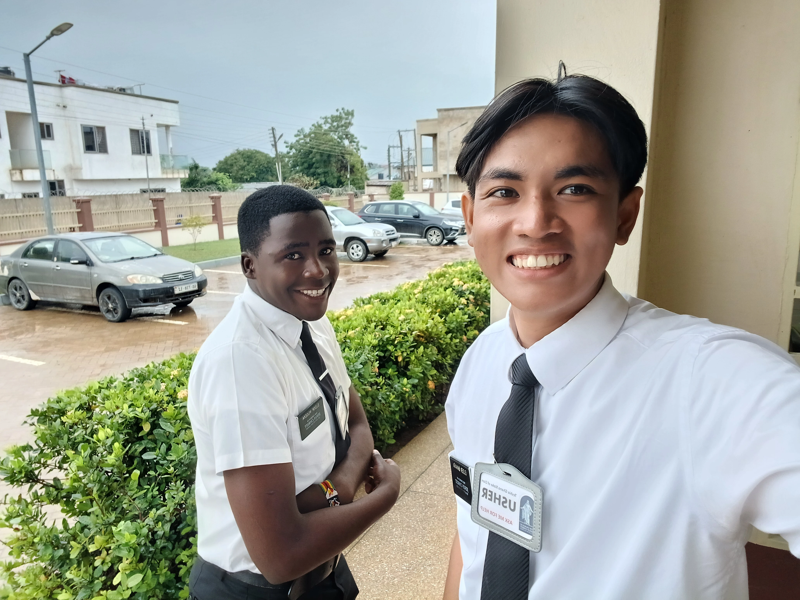
8th Companion, Elder Museka!
Area: Nungua 2 Ward
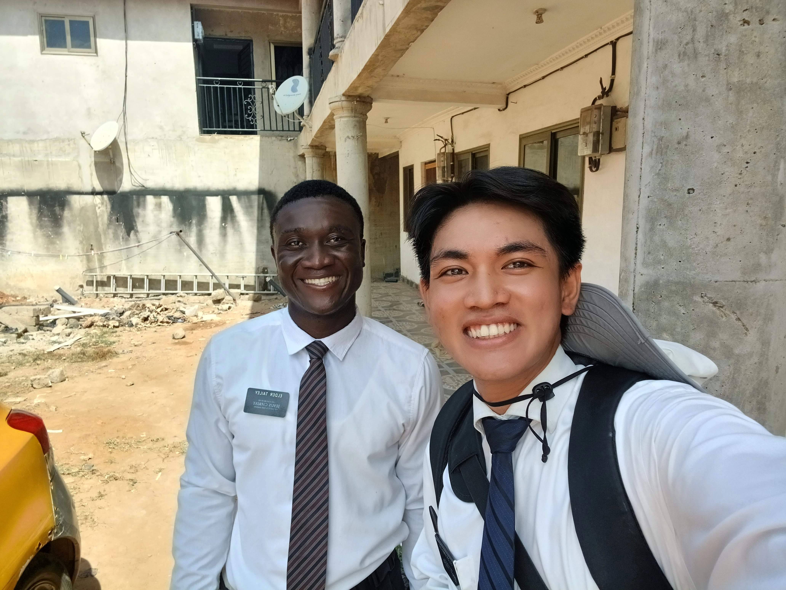
9th Companion, Elder Tailey!
Area: Ashaiman 2 Ward
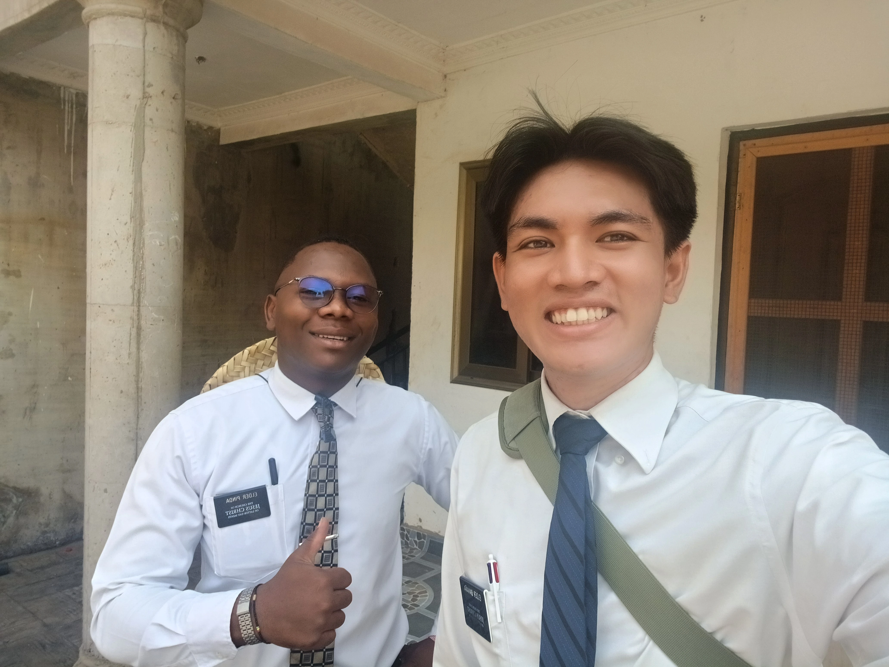
10th Companion, Elder Pinda!
Area: Ashaiman 2 Ward
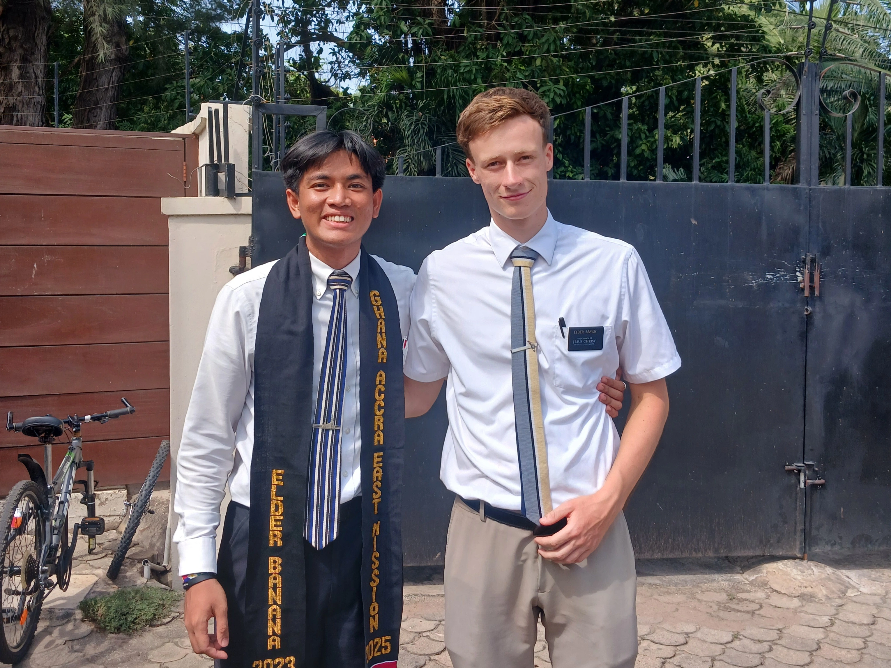
11th Companion, Elder Rapier!
Area: Jamestown A Ward